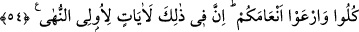

“çıkarma/bitirme” fiilinin ziyâdesiyle zâtına has olduğuna ve hiçbir kimsenin buna güç
yetiremeyeceğine dikkat çekmektir.
“
(çiftler)”, çeşitli türler/sınıflar demektir. Çift çift oldukları ve birbirlerine yakın
olmaları sebebiyle bu şekilde isimlendirilmişlerdir. Çünkü ister benzeri olsun ister
zıddı olsun birbirine yakın olan her şeye “zevc” denir. Çiftleşen hayvanlarda birbirine
yakın olan erkek ve dişiye “zevc” denir. Hem hayvanlarda hem de ayakkabı ve mest gibi
başkalarında birbirine yakın olan her şeye “zevc (çift)” denir.
Nebât, büyüyüp gelişen cisimlerdir. Nitekim Râğıb’ın belirttiği gibi “
” ve (en-
nebât” yerden çıkıp yetişen ağaç gibi gövdeli veya ot gibi gövdesiz bitkilerdir. Örfe
göre gövdesi olmayan bitkilere, avama göre de hayvanların yediği bitkilere denir.
Kelimenin hakîkî mânâsı göz önüne alınırsa hayvan, bitki veya insan olsun büyüyen her
şeye nebât denir.
“
(çeşitli)” kelimesi; farklı, ayrı mânâsınadır. Nebât kelimesinin sıfatıdır. Renkleri,
kokuları, şekilleri ve faydaları farklı, bazısı insanlara bazısı da hayvanlara uygun
demektir.
54. Yiyiniz; hayvanlarınızı otlatınız. Şüphesiz bunda akıl sahipleri için (Allâh’ın
kudretine) işâretler vardır.
“Yiyiniz;” Yani topraktan siz yiyin diye çeşit çeşit bitkiler, meyveler ve hubûbat
çıkardık. “Hayvanlarınızı otlatınız” otlatmak anlamında kullanılan “
” aslında
hayvanın hayatını sürdürecek yiyeceği vermek ya da onu düşmanlarından korumaktır.
Buradaki “
(hayvanlar)”dan maksad; deve, sığır, koyun, keçi gibi hayvanlardır. O
bitkilerden bizzat veya vâsıtalı olarak aşırı gitmeden faydalanın. Biz buna izin verdik.
Bazılarını yemenizi, bazılarını da hayvanlarınıza yedirmenizi mubah kıldık.
et-Te’vîlâtü’n-Necmiyye’de şöyle der: “Âyet işâret etmektedir ki gökyüzü, su, bitkiler
ve hayvanların hepsi sizin için yaratılmıştır. Eğer yaşamak için bunlara, hatta tüm
yaratılmışların hepsine ihtiyaç duymasaydınız onları yaratmazdım.”
Mağribî (k.s.) der ki:
Cümle cihanın vücûdundan garaz sensin
Sen olmasan kâinâtta hiçbir şey yaratılmazdı
“Şüphesiz bunda akıl sahipleri için (Allâh’ın kudretine) işâretler vardır.” Yeri beşik
yapmak, onda yollar açmak, gökten yağmur indirip çeşit çeşit bitkiler çıkarmak gibi
sözü geçen ilâhî fiillerde yaratıcının büyüklüğüne, birliğine kuvvetinin azametine,